其他
其他
AI 每日新聞彙整
其他
全部主題
其他
3 家媒體報導huangjensennvidia
Everything we know so far about the Nvidia spy scandal targeting CEO Jensen Huang
The leather-jacketed CEO of Nvidia, Jensen Huang, has acknowledged an affair with Megaspeed exec Alice Huang, spurring an investigation by his company and intense discussions worldwide. Recent reporting noted that since last year, US intelligence reports had identified Alice Huan
- The Verge AI What could China get from Jensen Huang?
- The Verge AI Here’s what Trump said he knew about Jensen Huang
- TechCrunch AI Jensen Huang reportedly engaged a PR firm with a history of handling high-profile sex scandals a year ago
- The Verge AI Everything we know so far about the Nvidia spy scandal targeting CEO Jensen Huang
- TechCrunch AI A short seller flagged Nvidia CEO’s ties to a suspected Chinese spy six months before the scandal
- TechCrunch AI The race is on to sue Nvidia
- TechCrunch AI Jensen Huang pulls out of ElevenLabs Summit amid Nvidia controversy
- TechCrunch AI Jensen Huang’s affair with alleged Chinese spy puts Nvidia’s China ambitions under scrutiny
- The Verge AI The future of AI hinges on… Jensen Huang’s sex life?
- Wired AI Jensen Huang Hired a PR Firm Known for Handling Sex Scandals Last Year
- TechCrunch AI Is Jensen Huang’s job on the line? Yale’s Jeffrey Sonnenfeld estimates it’s ‘about a 50-50’
3 家媒體報導tpugoogleamd
Google 第八代 TPU 再添兩款，聯手 AMD 打造安全與機密推論 TPU
Google 擴充第八代 TPU（Tensor Processing Unit）產品陣容，新增 2 款 TPU […]
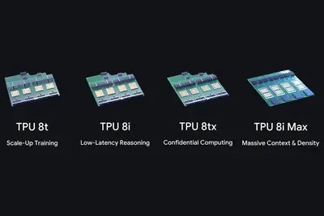
2 家媒體報導goland2026.3hbm
整合開發環境GoLand 2026.3讓AI代理直接操作效能分析器，追查Go程式瓶頸
JetBrains發布Go語言整合開發環境GoLand 2026.3，開放效能分析工具供AI代理操作。開發者只要描述API回應緩慢、CPU使用率過高或記憶體持續增加等問題，AI代理便可啟動程式、收集效能資料，找出耗費資源的函式與程式碼位置。目前已支援Claude Code、Codex及Junie。
- iThome 整合開發環境GoLand 2026.3讓AI代理直接操作效能分析器，追查Go程式瓶頸
- TechOrange 科技報橘 繼 OpenAI、Anthropic 之後，DeepSeek 也要建外掛市集：三家拉攏開發者的規則差在哪？
2 家媒體報導metamuseember
Meta 旗下 AI 助手 Muse 登陆苹果 Apple Watch
IT之家 11 月 10 日消息，据科技媒体 MacRumors 昨天报道，Meta 现已更新 iOS 版 Muse 应用，新增 Apple Watch 支持。这意味着苹果 Apple Watch 用户现在可以使用这款个人 AI 智能体， 在腕上完成各种任务 。 据介绍，Apple Watch 版 Muse 的主界面带有吉祥物元素。用户可以选择打字、语音输入、拨打语音电话等交互方式，支持表盘。 据IT之家了解，Muse 是 Meta 推出的一款个人 AI 智能体，能够帮助用户完成各种任务。它提供独立应用，并已集成至 Instagram、Facebook
2 家媒體報導datacenterdatacenter
The backlash about data centers might really just be about electricity
This story originally appeared in The Algorithm, our weekly newsletter on AI. To get stories like this in your inbox first, sign up here. As voters went to the polls across the US last week, I was in Ashburn, Virginia, part of what’s known as Data Center Alley—the world’s largest
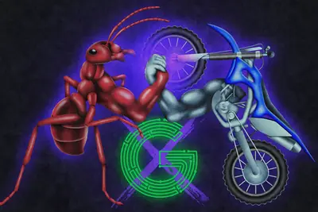
- MIT Technology Review AI The backlash about data centers might really just be about electricity
- Wired AI Bikers and Bug-Lovers Join Forces to Fight a New Google Data Center
2 家媒體報導mythosfablemodels
Anthropic launches new Claude Fable and Mythos 5.2 models
Anthropic is announcing two new models today: Claude Fable 5.2 and Claude Mythos 5.2, which it says are designed to take on "daunting" technical challenges. The company claims the new models show improvements in coding, reasoning, and vision, and can generate outputs faster than
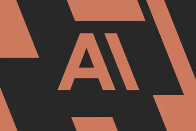
2 家媒體報導appleassistantsiri
Apple’s $50 Intelligence Usage Packs extend access to some AI features
After publishing a support article in early September outlining usage limits for some Apple Intelligence features, the company has updated Logic Pro with an option to "Buy More Usage" for a one-time purchase price of $49.99, as spotted by 9to5Mac. It has a built-in AI assistant t
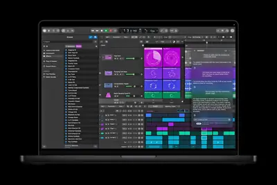
2 家媒體報導intelsecuritybecomes
Nvidia CEO's affair becomes a national security problem
Nvidia is probing whether Chinese intelligence targeted its CEO through an affair.
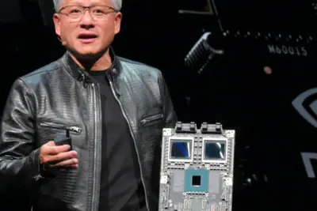
deepseekdigitimessamsung
DIGITIMES Today： NVIDIA押注英國量子新創 | 三星傳挖角前海信大將 | 長鑫董座傳參與DeepSeek第二輪融資
各位讀者，早安。
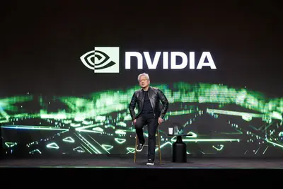
dayseoulskt
黃敏珊缺席下NVIDIA AI Day Seoul展開 強調南韓實體AI生態系合作
NVIDIA日前在南韓舉行 AI Day Seoul活動，雖原定訪韓的資深總監黃敏珊因故缺席，但整體活動仍聚焦AI代理、實體AI（Physical AI）與AI基礎設施，並以與南韓製造業...
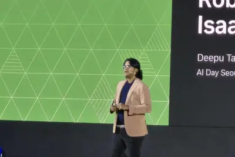
- DIGITIMES 黃敏珊缺席下NVIDIA AI Day Seoul展開 強調南韓實體AI生態系合作
- DIGITIMES NVIDIA布局南韓主權AI 攜Rebellions、SKT整合GPU與NPU
cposcale-out2027
資料中心Scale-Out需求先行 NVIDIA、矽品2027拚CPO放量
搭上AI基礎設施建置熱潮，高速傳輸方式加速朝向「光進銅退」架構演進，隨著資料中心的資料傳輸量持續增加，傳統電訊號面臨功耗及頻寬限制，也讓共同封裝光學（CPO）被...
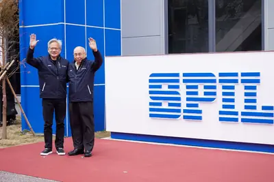
- DIGITIMES 資料中心Scale-Out需求先行 NVIDIA、矽品2027拚CPO放量
chip
評析：為何NVIDIA董事會難以換掉黃仁勳？
NVIDIA執行長黃仁勳私人關係風波持續擴大，事件已延伸至美國國家安全、AI晶片出口管制及企業治理層面。
- DIGITIMES 評析：為何NVIDIA董事會難以換掉黃仁勳？
riverlanefundingdeep
（專訪）NVIDIA押注英國量子新創 Riverlane力克低延遲與龐大運算瓶頸
隨著科技巨頭持續投入巨額資金與研發資源，量子運算等深科技（Deep Tech）領域受到高度關注。近期獲NVIDIA投資青睞的英國新創公司Riverlane，其執行長Steve Brier...
- DIGITIMES （專訪）NVIDIA押注英國量子新創 Riverlane力克低延遲與龐大運算瓶頸
h200
NVIDIA國安風險牽動台灣供應鏈 訂單配置、出貨節奏成觀察重點
NVIDIA是台灣半導體及AI伺服器供應鏈的重要客戶，事件後續若影響中國市場銷售、H200出口許可或客戶交易審查，可能進一步牽動台灣供應鏈的訂單配置與出貨節奏。<br /...
- DIGITIMES NVIDIA國安風險牽動台灣供應鏈 訂單配置、出貨節奏成觀察重點
datacenterfunding
美國反資料中心聲浪蔓延 澳洲盼分食AI投資商機
美國反對人工智慧（AI）資料中心的聲浪升高，科技大廠可能轉往海外尋找建設地點。澳洲憑藉土地、能源及地理位置優勢，有望承接投資案。
- DIGITIMES 美國反資料中心聲浪蔓延 澳洲盼分食AI投資商機
xaielonmusk
川普、Elon Musk送暖 NVIDIA黃仁勳面臨國安調查
NVIDIA執行長黃仁勳婚外情事件延燒之際，美國總統川普（Donald Trump）11月8日公開表示，黃仁勳是「正派人士」，肯定他對美國的貢獻，並稱自己尚未與黃仁勳討論相關...
- DIGITIMES 川普、Elon Musk送暖 NVIDIA黃仁勳面臨國安調查
hbmdatacenteraidc
AI搶料掀PC代工洗牌 惠普、華碩部分訂單回流中國
全球PC市場正面臨記憶體短缺與零組件成本飆漲的雙重衝擊，人工智慧資料中心（AIDC）大量吸納DRAM與NAND產能，不僅推高PC製造成本，也讓消費者延後換機，進一步...
- DIGITIMES AI搶料掀PC代工洗牌 惠普、華碩部分訂單回流中國
beepsourcemysterious
Locating the source of a mysterious beep with Claude
Our house has a box room, full of boxes that we still haven't unpacked from our last move. A couple of weeks ago something in that room started intermittently beeping . The beeps were far enough apart that standing in the room and trying to determine the source of the noise was f
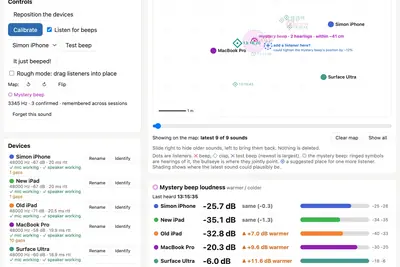
- Simon Willison Locating the source of a mysterious beep with Claude
harvey155ipo
估值達 155 億美元，法律 AI 超級獨角獸 Harvey 傳籌備 IPO
法律人工智慧新創公司 Harvey 已開始為進軍資本市場做準備。據兩名知情人士透露，這家近期估值達 155 億 […]
- 科技新報 TechNews 估值達 155 億美元，法律 AI 超級獨角獸 Harvey 傳籌備 IPO
anthropicipo5.2
8 天从零搓出操作系统：Anthropic 最强 Claude Fable / Mythos 5.2 AI 模型登场，API 调用费下降 20%
IT之家 11 月 10 日消息， Anthropic 昨日（11 月 9 日）官宣推出 Claude Fable 5.2 和 Claude Mythos 5.2， 两款模型基于同一底层模型，前者面向普通用户并内置网络安全与生物安全防护，后者则面向通过审核的网络安全和生命科学机构开放，用于高风险的专业应用。 定价方面，Claude Fable 5.2 每 100 万词元（Token）输入费用为 8 美元 （IT之家注：现汇率约合 53.4 元人民币） ，每 100 万词元（Token）输出费用为 40 美元 （现汇率约合 267.2 元人民币） 。作为对
colossal2300biosciences
找出 2,300 個關鍵基因標靶，生技新創 Colossal 靠 AI 繪製渡渡鳥「復活藏寶圖」
美國生技公司 Colossal Biosciences 10 月 14 日宣布，正式推出全新人工智慧平台「Ge […]
- 科技新報 TechNews 找出 2,300 個關鍵基因標靶，生技新創 Colossal 靠 AI 繪製渡渡鳥「復活藏寶圖」
美国以外首个：苹果将在土耳其建立先进制造培训中心，为中小企业免费提供咨询和培训服务
IT之家 11 月 10 日消息，据科技媒体 Appleinsider 昨天报道，苹果将在土耳其设立 7 处培训设施，进一步支持该国应用开发和先进制造业。这 7 处设施包含 5 所苹果开发者学院、伊斯坦布尔开发者中心，以及安卡拉先进制造中心。 ▲ 图源：Apple IT之家从原报道获悉，苹果将在未来 3 年内陆续在土耳其开设 5 所开发者学院，首个学院明年在伊斯坦布尔投入运营。每所学院将提供 9 个月的免费课程，涵盖编程、设计、市场营销、项目管理和 AI 等领域。课程还将涉及无障碍设计、隐私保护和可持续发展等内容，帮助学生掌握应用开发和创业所需技能。 同
grokbotxai
Grok Bot 配額縮水、模型變笨引發用戶降級，馬斯克承諾改善
Grok Bot 近期更新引發網友們抱怨，不僅被指出 Token 用量增加至 4 倍，也有人稱 Grok 工作 […]
- 科技新報 TechNews Grok Bot 配額縮水、模型變笨引發用戶降級，馬斯克承諾改善
【李牮斯專欄】為中小企業誕生的 AI：組織精簡、資料散亂，為何反而是導入優勢？
克卜勒太空望遠鏡 2009 年升空，不料短短四年後因關鍵設備故障，原有的觀測工作就被迫中斷。如今，望遠鏡雖已退役多年，天文學家仍持續從它留下的資料中發現新的系外行星，對科學的貢獻仍在延續。 AI 也是如此。 隨著民主黨在美國期中選舉勝出，支持限制資料中心擴建的政治力量也跟著壯大，市場因而擔心 AI 資本支出放緩。但就算 AI 投資今天就停下來，既有模型也有足夠力量，從此改變企業競爭的方式，甚至重寫人類的經濟規則。 企業競爭，說到底離不開速度、品質、判斷與創新。在不少知識工作上，AI 在這些項目上的表現，已能超越人類。隨著 AI 代理人在 2026 年逐漸
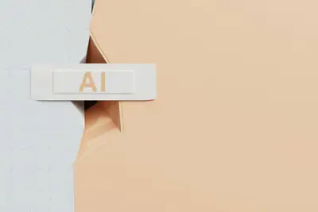
- TechOrange 科技報橘 【李牮斯專欄】為中小企業誕生的 AI：組織精簡、資料散亂，為何反而是導入優勢？
urlcommentshttps
Claude Fable 5.2 and Mythos 5.2
Article URL: https://www.anthropic.com/claude-fable-and-mythos-5-2 Comments URL: https://news.ycombinator.com/item?id=50429906 Points: 850 # Comments: 514
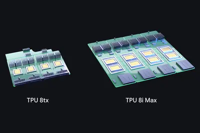
- Hacker News (100+) TPUs
- Hacker News (100+) Claude Fable 5.2 Scores 65 on Artificial Analysis, Highest So Far
- Hacker News (100+) Claude Fable 5.2 and Mythos 5.2
- Hacker News (100+) Google Gemini routes personal Drive files and emails to human annotators
searchwindowssettings
You can change Windows settings directly from a search now – how to try it
The latest Windows 11 Insiders Preview enhances the Search feature so that you can access specific settings right from a search window.
awsamazonenterprise
ChatGPT Enterprise now available in AWS Marketplace
ChatGPT Enterprise is now available through AWS Marketplace, helping organizations simplify procurement through existing AWS purchasing and billing relationships.
bugwearingamd
AMD confirms GPU driver bug is wearing out your SSD – how to stop it
AMD has admitted a bug within its External Events Utility is wearing out SSDs, and promises a fix.
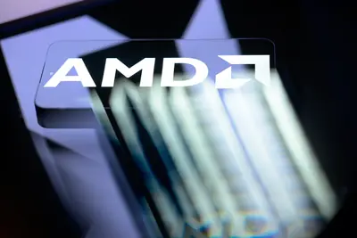
effectbuilderfilters
Instagram’s Effect Builder makes new filters from AI prompts
After expanding its Edits app to macOS last week, Instagram's next move is launching this Effect Builder that generates custom filters for your Stories posts with AI. Available now for US residents who are over 18, it has a prompt box for describing your filter idea to the chatbo
androidautorequires
Android Auto requires Android 11 or higher now – check your compatibility
Android Auto’s minimum requirements have changed. Here’s what to know.
samsunggalaxysmarttag
Samsung’s new SmartTag 3 debuts with next-gen Bluetooth – and one big problem
The Galaxy SmartTag 3 supports emerging Bluetooth tracking tech, but it’s not a match for Samsung’s OS exclusivity.
accidentallyexposingsecrets
Claude Code is accidentally exposing secrets all over GitHub
"Do not ask again" prompt leads to passwords, API keys, and more being shared.
- Ars Technica AI Claude Code is accidentally exposing secrets all over GitHub
nancypelosireplacement
Nancy Pelosi’s replacement is ready to regulate AI
As a California state senator, Scott Wiener authored legislation aimed at curbing the risks of advanced AI. Now, after winning a tight congressional race for former Speaker of the House Nancy Pelosi’s open San Francisco seat, he could play a key role in setting federal AI policy.
- MIT Technology Review AI Nancy Pelosi’s replacement is ready to regulate AI
naturalgasworth
Anthropic joins AI’s natural gas frenzy, buys $3.4B worth of turbines
Anthropic bought billions of dollars' worth of natural gas turbines in a deal that could give it buyer's remorse.
agentstestingzero-trust
AI Agents Are Testing the Limits of Zero-Trust Security
This article is brought to you by Queen’s University Belfast . Several teams around the globe are leveraging AI by creating a task force of agents managed by an orchestrator and creating applications to support risk assessment, client profiling, match making, and information yiel
- IEEE Spectrum AI AI Agents Are Testing the Limits of Zero-Trust Security
writingmediumapp
Medium’s new TK app brings AI assistance directly into the writing process
Medium's new writing app embraces AI-assisted writing, despite growing controversy over the technology's role in publishing.
safetyminutesrisk
Trump’s 60 Minutes interview touched on AI safety, threat to arrest an AI exec
Asked about AI executives' warnings about their models' safety on 60 Minutes, Trump said, "I think that the risk is not nearly as real as it- as they talk, and I think the risk can be managed, and it's managed." He claimed the DOJ is managing that risk, saying, "We had a situatio
disneyadobegenerative
Disney and Adobe are building generative AI tools together
The Walt Disney Company has teamed up with Adobe to develop proprietary "artist-led" generative AI models to support Disney's production pipeline. The multiyear partnership was announced today at Adobe's MAX conference, and it will see Adobe providing Disney with early access to
koreanstartupscollaboration
NVIDIA Announces New Planned Investments in Korean Startups at the MSIT-NVIDIA AI Startup Partnership Forum
Korea’s Ministry of Science and ICT and NVIDIA hosted the MSIT-NVIDIA AI Startup Partnership Forum at COEX. Ryu Je-myung, vice minister of science and ICT, joined NVIDIA leaders to meet with over 20 Korean startups across foundation models, physical AI, AI infrastructure and AI s
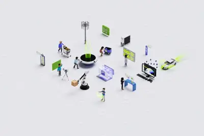
koreabringrecipes
Korea Advances Physical AI Across Industries With NVIDIA
Tapping into the country’s strengths in manufacturing and engineering, NVIDIA is helping advance Korea’s physical AI ecosystem. The country’s industry leaders are applying accelerated computing, AI and simulation to everything from semiconductor manufacturing to robotics and auto
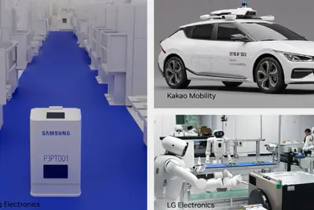